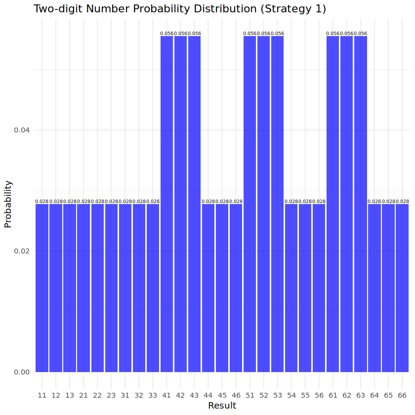

# data 불러오기
two_dice <- read.csv("https://raw.githubusercontent.com/sw1kwon/Capstone1/refs/heads/main/two_dice.csv", header=TRUE)과제 1.1
주사위 두 개를 굴려서 나온 눈의 수를 사용해서 두 자리 숫자를 크게 만드는 사람이 이기는 게임이다. 주사위를 처음 굴려서 나온 눈의 수를 10의 자리와 1의 자리 중 어느 곳에 사용할 지 먼저 결정해야 한다. 그런 다음 두 번째로 주사위를 굴려서 나온 눈의 수는 자동으로 남은 자리의 숫자로 사용된다.
예를 들어, 첫 번째 주사위가 3인데 10의 자리로 결정했고, 두 번째 6이 나왔다면 결과는 36이 된다.
어떤 전략을 사용해야 게임에 이길 가능성이 가장 클까?
1.
최선이라고 선택한 전략의 “two_dice.csv” 파일 총점수 및 평균
head(two_dice) # data 형태| dice1 | dice2 | |
|---|---|---|
| <int> | <int> | |
| 1 | 1 | 4 |
| 2 | 1 | 2 |
| 3 | 5 | 3 |
| 4 | 6 | 2 |
| 5 | 3 | 3 |
| 6 | 1 | 5 |
nrow(two_dice) # data 길이
1000000
- 전략 1: 문제를 보자마자 떠오른 전략
- 첫 번째 주사위가 3 이하이면 1의 자리, 4 이상이면 10의 자리에 배치
- 이유: 주사위 눈이 총 6개이고 주사위를 총 2번 던지므로 1에서 6까지 반절씩 나누면 괜찮을 것 같음
- 전략 2
- 첫 번째 주사위가 4 이하면 1의 자리, 5 이상이면 10의 자리에 배치
- 전략 3
- 첫 번째 주사위가 2 이하면 1의 자리, 3 이상이면 10의 자리에 배치
전략 1
# dice1이 3 이하이면 dice2를 10의 자리로, 4 이상이면 dice1을 10의 자리로 배치
two_dice$result1 <- ifelse(two_dice$dice1 <= 3, two_dice$dice1 + two_dice$dice2 * 10, two_dice$dice1 * 10 + two_dice$dice2)# 결과 확인
head(two_dice)| dice1 | dice2 | result1 | |
|---|---|---|---|
| <int> | <int> | <dbl> | |
| 1 | 1 | 4 | 41 |
| 2 | 1 | 2 | 21 |
| 3 | 5 | 3 | 53 |
| 4 | 6 | 2 | 62 |
| 5 | 3 | 3 | 33 |
| 6 | 1 | 5 | 51 |
# 총점수
sum(two_dice$result1)
45241257
# 평균
mean(two_dice$result1)
45.241257
전략 2
# dice1이 4 이하이면 dice2를 10의 자리로, 5 이상이면 dice1을 10의 자리로 배치
two_dice$result2 <- ifelse(two_dice$dice1 <= 4, two_dice$dice1 + two_dice$dice2 * 10, two_dice$dice1 * 10 + two_dice$dice2)# 결과 확인
head(two_dice)| dice1 | dice2 | result1 | result2 | |
|---|---|---|---|---|
| <int> | <int> | <dbl> | <dbl> | |
| 1 | 1 | 4 | 41 | 41 |
| 2 | 1 | 2 | 21 | 21 |
| 3 | 5 | 3 | 53 | 53 |
| 4 | 6 | 2 | 62 | 62 |
| 5 | 3 | 3 | 33 | 33 |
| 6 | 1 | 5 | 51 | 51 |
# 총점수
sum(two_dice$result2)
44482521
# 평균
mean(two_dice$result2)
44.482521
전략 3
# dice1이 2 이하이면 dice2를 10의 자리로, 3 이상이면 dice1을 10의 자리로 배치
two_dice$result3 <- ifelse(two_dice$dice1 <= 2, two_dice$dice1 + two_dice$dice2 * 10, two_dice$dice1 * 10 + two_dice$dice2)# 결과 확인
head(two_dice)| dice1 | dice2 | result1 | result2 | result3 | |
|---|---|---|---|---|---|
| <int> | <int> | <dbl> | <dbl> | <dbl> | |
| 1 | 1 | 4 | 41 | 41 | 41 |
| 2 | 1 | 2 | 21 | 21 | 21 |
| 3 | 5 | 3 | 53 | 53 | 53 |
| 4 | 6 | 2 | 62 | 62 | 62 |
| 5 | 3 | 3 | 33 | 33 | 33 |
| 6 | 1 | 5 | 51 | 51 | 51 |
# 총점수
sum(two_dice$result3)
44494923
# 평균
mean(two_dice$result3)
44.494923
결론
# 열 평균 계산 및 비교
colMeans(two_dice[c("result1", "result2", "result3")])- result1
- 45.241257
- result2
- 44.482521
- result3
- 44.494923
- 전략 1의 평균이 제일 높아 가장 좋은 전략으로 생각은 되나 확실하지 않음
- 전략 2의 평균보다 전략 3의 평균이 높음
2.
최선의 전략일 때 확률분포를 구하고 그래프로 그려라.
# 패키지 로드
library(ggplot2)
library(dplyr)전략 1
# 모든 가능한 주사위 값 조합 (36개)
d2 <- expand.grid(dice1 = 1:6, dice2 = 1:6)# 두 자리 숫자(result1) 계산
d2 <- d2 %>%
mutate(result1 = ifelse(dice1 <= 3, dice1 + dice2 * 10, dice1 * 10 + dice2))# 각 result1이 나올 확률 계산 (각 조합은 1/36 확률)
prob_d2_1 <- d2 %>%
group_by(result1) %>%
summarise(probability = n() / 36)# 데이터프레임 확인
print(prob_d2_1)# A tibble: 27 × 2
result1 probability
<dbl> <dbl>
1 11 0.0278
2 12 0.0278
3 13 0.0278
4 21 0.0278
5 22 0.0278
6 23 0.0278
7 31 0.0278
8 32 0.0278
9 33 0.0278
10 41 0.0556
# ℹ 17 more rows# 결과로 생긴 두자리 수의 총 개수
length(prob_d2_1$result1)
27
# 확률의 합 = 1 확인
sum(prob_d2_1$probability)
1
# 확률별 빈도수 확인
table(prob_d2_1$probability)
0.0277777777777778 0.0555555555555556
18 9 # 확률 분포 그래프 그리기 (확률값 표시 포함)
ggplot(prob_d2_1, aes(x = factor(result1), y = probability)) +
geom_bar(stat = "identity", fill = "blue", alpha = 0.7) +
geom_text(aes(label = sprintf("%.3f", probability)), vjust = -0.3, size = 2) + # 확률값 표시 (소수점 3자리)
labs(title = "Two-digit Number Probability Distribution (Strategy 1)",
x = "Result",
y = "Probability") +
theme_minimal()
전략 2
# 두 자리 숫자(result2) 계산
d2 <- d2 %>%
mutate(result2 = ifelse(dice1 <= 4, dice1 + dice2 * 10, dice1 * 10 + dice2))# 각 result2이 나올 확률 계산 (각 조합은 1/36 확률)
prob_d2_2 <- d2 %>%
group_by(result2) %>%
summarise(probability = n() / 36)# 데이터프레임 확인
print(prob_d2_2)# A tibble: 28 × 2
result2 probability
<dbl> <dbl>
1 11 0.0278
2 12 0.0278
3 13 0.0278
4 14 0.0278
5 21 0.0278
6 22 0.0278
7 23 0.0278
8 24 0.0278
9 31 0.0278
10 32 0.0278
# ℹ 18 more rows# 결과로 생긴 두자리 수의 총 개수
length(prob_d2_2$result2)
28
# 확률의 합 = 1 확인
sum(prob_d2_2$probability)
1
# 확률별 빈도수 확인
table(prob_d2_2$probability)
0.0277777777777778 0.0555555555555556
20 8 # 확률 분포 그래프 그리기 (확률값 표시 포함)
ggplot(prob_d2_2, aes(x = factor(result2), y = probability)) +
geom_bar(stat = "identity", fill = "blue", alpha = 0.7) +
geom_text(aes(label = sprintf("%.3f", probability)), vjust = -0.3, size = 2) + # 확률값 표시 (소수점 3자리)
labs(title = "Two-digit Number Probability Distribution (Strategy 2)",
x = "Result",
y = "Probability") +
theme_minimal()전략 3
# 두 자리 숫자(result3) 계산
d2 <- d2 %>%
mutate(result3 = ifelse(dice1 <= 2, dice1 + dice2 * 10, dice1 * 10 + dice2))# 각 result3이 나올 확률 계산 (각 조합은 1/36 확률)
prob_d2_3 <- d2 %>%
group_by(result3) %>%
summarise(probability = n() / 36)# 데이터프레임 확인
print(prob_d2_3)# A tibble: 28 × 2
result3 probability
<dbl> <dbl>
1 11 0.0278
2 12 0.0278
3 21 0.0278
4 22 0.0278
5 31 0.0556
6 32 0.0556
7 33 0.0278
8 34 0.0278
9 35 0.0278
10 36 0.0278
# ℹ 18 more rows# 결과로 생긴 두자리 수의 총 개수
length(prob_d2_3$result3)
28
# 확률의 합 = 1 확인
sum(prob_d2_3$probability)
1
# 확률별 빈도수 확인
table(prob_d2_3$probability)
0.0277777777777778 0.0555555555555556
20 8 # 확률 분포 그래프 그리기 (확률값 표시 포함)
ggplot(prob_d2_3, aes(x = factor(result3), y = probability)) +
geom_bar(stat = "identity", fill = "blue", alpha = 0.7) +
geom_text(aes(label = sprintf("%.3f", probability)), vjust = -0.3, size = 2) + # 확률값 표시 (소수점 3자리)
labs(title = "Two-digit Number Probability Distribution (Strategy 3)",
x = "Result",
y = "Probability") +
theme_minimal()결론
- 각 전략 별로 확률 분포가 다르게 나옴
- 확률 분포만 보면 높은 숫자의 확률이 높은 전략 2가 좋아보이기도 함
3.
최선의 전략에서 기대 점수
전략 1
sum(prob_d2_1$result1 * prob_d2_1$probability)
45.25
전략 2
sum(prob_d2_2$result2 * prob_d2_2$probability)
44.5
전략 3
sum(prob_d2_3$result3 * prob_d2_3$probability)
44.5
결론
- 전략 1의 기대 점수가 제일 높으므로 전략 1,2,3 중 최선의 전략은 전략 1이라고 할 수 있음
- 전략 2와 전략 3의 기대 점수는 동일함
이론적 증명
공정한 주사위를 1개 던져서 나오는 결과를 \(k\)라고 할 때
\[P(X = k) = \frac{1}{6}, \quad k \in \{1, 2, 3, 4, 5, 6\}\]
\[E[X] = \frac{1 + 2 + 3 + 4 + 5 + 6}{6} = \frac{21}{6} = 3.5\]
첫 번째 주사위를 던져서 나온 결과를 \(d\) , 이후에 던질 두 번째 주사위의 결과를 \(Y\)라고 할 때
- \(d\)를 10의 자리에 둘 경우
\[E[10d + Y] = 10d + E[Y] = 10d + 3.5\]
- \(d\)를 1의 자리에 둘 경우
\[E[10Y + d] = 10E[Y] + d = 10*3.5 + d = 35 + d\]
\(d\)를 어느 자리에 두는 것이 유리한지 비교해보기 위해 두 경우 기대값의 차를 구하면
\[E[10d + Y] - E[10Y + d] = (10d + 3.5) - (35 + d) = 9d - 31.5\]
이 차가 양수이면 10의 자리에 d를 넣는 것이 유리하고 음수이면 1의 자리에 d를 넣는 것이 유리함 [기대값이 큼]
차가 양수일 때 \(d \in \{4, 5, 6\}\)
차가 음수일 때 \(d \in \{1, 2, 3\}\)
전략 2의 경우 \(d = 4\)일 때, 잘못된 선택을 하게 되어 기대값이 낮아짐
전략 3의 경우 \(d = 3\)일 때, 잘못된 선택을 하게 되어 기대값이 낮아짐
과제 1.2
주사위 3개를 굴려서 나온 눈의 수를 사용해서 세자리 숫자를 가장 크게 만드는 사람이 이기는 게임이다. 주사위를 처음 굴려서 나온 눈의 수를 세자리 숫자에서 어느 곳에 사용할 지 먼저 결정한다. 그런 다음 두 번째로 굴린 주사위에서 나온 눈의 수는 남은 두자리의 숫자 중 하나로 결정한다. 세 번째 나온 주사위 눈수는 자동으로 남은 숫자로 사용된다.
예를 들어, 첫 번째 주사위가 3인데 10의 자리로 결정했고, 두 번째 6이 나와 100의 자리 숫자에 사용하고, 세 번째 주사위 눈수가 1이면 결과는 631이 된다.
어떤 전략이 최선의 전략인가?
1.
최선이라고 선택한 전략의 “three_dice.csv” 파일 총점수 및 평균
# data 불러오기
three_dice <- read.csv("https://raw.githubusercontent.com/sw1kwon/Capstone1/refs/heads/main/three_dice.csv", header=TRUE)head(three_dice) # data 형태| dice1 | dice2 | dice3 | |
|---|---|---|---|
| <int> | <int> | <int> | |
| 1 | 5 | 2 | 4 |
| 2 | 4 | 2 | 3 |
| 3 | 4 | 2 | 5 |
| 4 | 2 | 5 | 4 |
| 5 | 5 | 5 | 5 |
| 6 | 1 | 1 | 6 |
nrow(three_dice) # data 길이
1000000
- 전략 1: 문제를 보자마자 떠오른 전략
- 첫 번째 주사위가 1,2 면 1의 자리, 3,4 이면 10의 자리, 5,6 이면 100의 자리에 배치
- 두 번째 주사위는 3 이하일 때 둘 중 낮은 자리, 4 이상일 때 둘 중 높은 자리에 배치
- 이유: 주사위 눈이 총 6개이고 주사위를 총 3번 던지므로 1에서 6까지 3등분하면 괜찮을 것 같음
- 전략 2
- 첫 번째 주사위가 3 이하면 1의 자리, 4 이상이면 100의 자리에 배치
- 첫 번째 주사위가 3 이하일 때
- 두 번째 주사위가 3 이하이면 10의 자리, 4 이상이면 100의 자리
- 첫 번째 주사위가 4 이상일 때
- 두 번재 주사위가 3 이하이면 1의 자리, 4 이상이면 10의 자리
- 전략 3
- 첫 번째 주사위가 3 이하면 1의 자리, 4 이상이면 10의 자리에 배치
- 첫 번째 주사위가 3 이하일 때
- 두 번째 주사위가 3 이하이면 10의 자리, 4 이상이면 100의 자리
- 첫 번째 주사위가 4 이상일 때
- 두 번재 주사위가 3 이하이면 1의 자리, 4 이상이면 100의 자리
전략 1
three_dice$result1 <- ifelse(three_dice$dice1 %in% c(1,2),
# 첫 번째 주사위가 1 또는 2 → dice1는 1의 자리, 남은 자리는 tens와 hundreds
ifelse(three_dice$dice2 <= 3,
# 두 번째 주사위가 3 이하 → 낮은 자리: tens, 남은 높은 자리: hundreds
three_dice$dice3 * 100 + three_dice$dice2 * 10 + three_dice$dice1,
# 두 번째 주사위가 4 이상 → 높은 자리: hundreds, 남은 낮은 자리: tens
three_dice$dice2 * 100 + three_dice$dice3 * 10 + three_dice$dice1),
ifelse(three_dice$dice1 %in% c(3,4),
# 첫 번째 주사위가 3 또는 4 → dice1는 10의 자리, 남은 자리는 hundreds와 ones
ifelse(three_dice$dice2 <= 3,
# 두 번째 주사위가 3 이하 → 낮은 자리: ones, 남은 높은 자리: hundreds
three_dice$dice3 * 100 + three_dice$dice1 * 10 + three_dice$dice2,
# 두 번째 주사위가 4 이상 → 높은 자리: hundreds, 남은 낮은 자리: ones
three_dice$dice2 * 100 + three_dice$dice1 * 10 + three_dice$dice3),
# 첫 번째 주사위가 5 또는 6 → dice1는 100의 자리, 남은 자리는 tens와 ones
ifelse(three_dice$dice2 <= 3,
# 두 번째 주사위가 3 이하 → 낮은 자리: ones, 남은 높은 자리: tens
three_dice$dice1 * 100 + three_dice$dice3 * 10 + three_dice$dice2,
# 두 번째 주사위가 4 이상 → 높은 자리: tens, 남은 낮은 자리: ones
three_dice$dice1 * 100 + three_dice$dice2 * 10 + three_dice$dice3)))# 결과 확인
head(three_dice)| dice1 | dice2 | dice3 | result1 | |
|---|---|---|---|---|
| <int> | <int> | <int> | <dbl> | |
| 1 | 5 | 2 | 4 | 542 |
| 2 | 4 | 2 | 3 | 342 |
| 3 | 4 | 2 | 5 | 542 |
| 4 | 2 | 5 | 4 | 542 |
| 5 | 5 | 5 | 5 | 555 |
| 6 | 1 | 1 | 6 | 611 |
# 총점수
sum(three_dice$result1)
503895228
# 평균
mean(three_dice$result1)
503.895228
전략 2
three_dice$result2 <- ifelse(
three_dice$dice1 <= 3, # dice1이 3 이하면 일의 자리
ifelse(three_dice$dice2 <= 3, # dice2가 3 이하면 십의 자리, 4 이상이면 백의 자리
three_dice$dice1 + three_dice$dice2 * 10 + three_dice$dice3 * 100, # dice2가 십의 자리, dice3가 백의 자리
three_dice$dice1 + three_dice$dice3 * 10 + three_dice$dice2 * 100), # dice2가 백의 자리, dice3가 십의 자리
ifelse(three_dice$dice2 <= 3, # dice1이 4 이상이면 백의 자리, dice2가 3 이하면 일의 자리
three_dice$dice2 + three_dice$dice3 * 10 + three_dice$dice1 * 100, # dice2가 일의 자리, dice3가 십의 자리
three_dice$dice3 + three_dice$dice2 * 10 + three_dice$dice1 * 100) # dice2가 십의 자리, dice3가 일의 자리
)# 결과 확인
head(three_dice)| dice1 | dice2 | dice3 | result1 | result2 | |
|---|---|---|---|---|---|
| <int> | <int> | <int> | <dbl> | <dbl> | |
| 1 | 5 | 2 | 4 | 542 | 542 |
| 2 | 4 | 2 | 3 | 342 | 432 |
| 3 | 4 | 2 | 5 | 542 | 452 |
| 4 | 2 | 5 | 4 | 542 | 542 |
| 5 | 5 | 5 | 5 | 555 | 555 |
| 6 | 1 | 1 | 6 | 611 | 611 |
# 총점수
sum(three_dice$result2)
499792560
# 평균
mean(three_dice$result2)
499.79256
전략 3
three_dice$result3 <- ifelse(
three_dice$dice1 <= 3, # dice1이 3 이하면 일의 자리
ifelse(three_dice$dice2 <= 3, # dice2가 3 이하면 십의 자리, 4 이상이면 백의 자리
three_dice$dice1 + three_dice$dice2 * 10 + three_dice$dice3 * 100, # dice2가 십의 자리, dice3가 백의 자리
three_dice$dice1 + three_dice$dice3 * 10 + three_dice$dice2 * 100), # dice2가 백의 자리, dice3가 십의 자리
ifelse(three_dice$dice2 <= 3, # dice1이 4 이상이면 십의 자리, dice2가 3 이하면 일의 자리
three_dice$dice2 + three_dice$dice1 * 10 + three_dice$dice3 * 100, # dice2가 일의 자리, dice3가 백의 자리
three_dice$dice3 + three_dice$dice1 * 10 + three_dice$dice2 * 100) # dice2가 백의 자리, dice3가 일의 자리
)# 결과 확인
head(three_dice)| dice1 | dice2 | dice3 | result1 | result2 | result3 | |
|---|---|---|---|---|---|---|
| <int> | <int> | <int> | <dbl> | <dbl> | <dbl> | |
| 1 | 5 | 2 | 4 | 542 | 542 | 452 |
| 2 | 4 | 2 | 3 | 342 | 432 | 342 |
| 3 | 4 | 2 | 5 | 542 | 452 | 542 |
| 4 | 2 | 5 | 4 | 542 | 542 | 542 |
| 5 | 5 | 5 | 5 | 555 | 555 | 555 |
| 6 | 1 | 1 | 6 | 611 | 611 | 611 |
# 총점수
sum(three_dice$result3)
466002330
# 평균
mean(three_dice$result3)
466.00233
결론
# 열 평균 계산 및 비교
colMeans(three_dice[c("result1", "result2", "result3")])- result1
- 503.895228
- result2
- 499.79256
- result3
- 466.00233
- 전략 1의 평균이 제일 높아 가장 좋은 전략으로 생각은 되나 확실하지 않음
- 전략 3의 평균은 다른 전략들에 비해 많이 떨어짐
2.
최선의 전략일 때 확률분포를 구하고 그래프로 그려라.
# 패키지 로드
library(ggplot2)
library(dplyr)전략 1
# 모든 가능한 주사위 값 조합 (216개)
d3 <- expand.grid(dice1 = 1:6, dice2 = 1:6, dice3 = 1:6)# 세 자리 숫자(result) 계산
d3 <- d3 %>%
mutate(result1 = ifelse(d3$dice1 %in% c(1,2),
# 첫 번째 주사위가 1 또는 2 → dice1는 1의 자리, 남은 자리는 tens와 hundreds
ifelse(d3$dice2 <= 3,
# 두 번째 주사위가 3 이하 → 낮은 자리: tens, 남은 높은 자리: hundreds
d3$dice3 * 100 + d3$dice2 * 10 + d3$dice1,
# 두 번째 주사위가 4 이상 → 높은 자리: hundreds, 남은 낮은 자리: tens
d3$dice2 * 100 + d3$dice3 * 10 + d3$dice1),
ifelse(d3$dice1 %in% c(3,4),
# 첫 번째 주사위가 3 또는 4 → dice1는 10의 자리, 남은 자리는 hundreds와 ones
ifelse(d3$dice2 <= 3,
# 두 번째 주사위가 3 이하 → 낮은 자리: ones, 남은 높은 자리: hundreds
d3$dice3 * 100 + d3$dice1 * 10 + d3$dice2,
# 두 번째 주사위가 4 이상 → 높은 자리: hundreds, 남은 낮은 자리: ones
d3$dice2 * 100 + d3$dice1 * 10 + d3$dice3),
# 첫 번째 주사위가 5 또는 6 → dice1는 100의 자리, 남은 자리는 tens와 ones
ifelse(d3$dice2 <= 3,
# 두 번째 주사위가 3 이하 → 낮은 자리: ones, 남은 높은 자리: tens
d3$dice1 * 100 + d3$dice3 * 10 + d3$dice2,
# 두 번째 주사위가 4 이상 → 높은 자리: tens, 남은 낮은 자리: ones
d3$dice1 * 100 + d3$dice2 * 10 + d3$dice3)))
)# 각 result가 나올 확률 계산 (각 조합은 1/216 확률)
prob_d3_1 <- d3 %>%
group_by(result1) %>%
summarise(probability = n() / 216)# 데이터프레임 확인
print(prob_d3_1)# A tibble: 110 × 2
result1 probability
<dbl> <dbl>
1 111 0.00463
2 112 0.00463
3 121 0.00463
4 122 0.00463
5 131 0.00926
6 132 0.00926
7 133 0.00463
8 141 0.00463
9 142 0.00463
10 143 0.00463
# ℹ 100 more rows# 결과로 생긴 두자리 수의 총 개수
length(prob_d3_1$result1)
110
# 확률의 합 = 1 확인
sum(prob_d3_1$probability)
1
# 확률별 빈도수 확인
table(prob_d3_1$probability)
0.00462962962962963 0.00925925925925926 0.0138888888888889 0.0185185185185185
56 22 20 4
0.0231481481481481
8 # 그래프 크기 설정
options(repr.plot.width = 12, repr.plot.height = 8)# 확률 분포 그래프 그리기 (확률값 표시 포함)
ggplot(prob_d3_1, aes(x = factor(result1), y = probability)) +
geom_bar(stat = "identity", fill = "blue", alpha = 0.7) +
geom_text(aes(label = sprintf("%.3f", probability)), vjust = -0.3, size = 1) + # 확률값 표시 (소수점 3자리)
labs(title = "Three-digit Number Probability Distribution (Strategy 1)",
x = "Result",
y = "Probability") +
theme_minimal() +
theme(axis.text.x = element_text(size=4, angle = 90, hjust = 1)) + # x축 글자 크기 작게 설정
scale_y_continuous(breaks = sort(unique(prob_d3_1$probability)))전략 2
# 세 자리 숫자(result) 계산
d3 <- d3 %>%
mutate(result2 = ifelse(
d3$dice1 <= 3, # dice1이 3 이하면 일의 자리
ifelse(d3$dice2 <= 3, # dice2가 3 이하면 십의 자리, 4 이상이면 백의 자리
d3$dice1 + d3$dice2 * 10 + d3$dice3 * 100, # dice2가 십의 자리, dice3가 백의 자리
d3$dice1 + d3$dice3 * 10 + d3$dice2 * 100), # dice2가 백의 자리, dice3가 십의 자리
ifelse(d3$dice2 <= 3, # dice1이 4 이상이면 백의 자리, dice2가 3 이하면 일의 자리
d3$dice2 + d3$dice3 * 10 + d3$dice1 * 100, # dice2가 일의 자리, dice3가 십의 자리
d3$dice3 + d3$dice2 * 10 + d3$dice1 * 100) # dice2가 십의 자리, dice3가 일의 자리
)
)# 각 result가 나올 확률 계산 (각 조합은 1/216 확률)
prob_d3_2 <- d3 %>%
group_by(result2) %>%
summarise(probability = n() / 216)# 데이터프레임 확인
print(prob_d3_2)# A tibble: 108 × 2
result2 probability
<dbl> <dbl>
1 111 0.00463
2 112 0.00463
3 113 0.00463
4 121 0.00463
5 122 0.00463
6 123 0.00463
7 131 0.00463
8 132 0.00463
9 133 0.00463
10 211 0.00463
# ℹ 98 more rows# 결과로 생긴 두자리 수의 총 개수
length(prob_d3_2$result2)
108
# 확률의 합 = 1 확인
sum(prob_d3_2$probability)
1
# 확률별 빈도수 확인
table(prob_d3_2$probability)
0.00462962962962963 0.0138888888888889
54 54 # 그래프 크기 설정
options(repr.plot.width = 12, repr.plot.height = 8)# 확률 분포 그래프 그리기 (확률값 표시 포함)
ggplot(prob_d3_2, aes(x = factor(result2), y = probability)) +
geom_bar(stat = "identity", fill = "blue", alpha = 0.7) +
geom_text(aes(label = sprintf("%.3f", probability)), vjust = -0.3, size = 1) + # 확률값 표시 (소수점 3자리)
labs(title = "Three-digit Number Probability Distribution (Strategy 2)",
x = "Result",
y = "Probability") +
theme_minimal() +
theme(axis.text.x = element_text(size=4, angle = 90, hjust = 1)) + # x축 글자 크기 작게 설정
scale_y_continuous(breaks = sort(unique(prob_d3_2$probability)))전략 3
# 세 자리 숫자(result) 계산
d3 <- d3 %>%
mutate(result3 = ifelse(
d3$dice1 <= 3, # dice1이 3 이하면 일의 자리
ifelse(d3$dice2 <= 3, # dice2가 3 이하면 십의 자리, 4 이상이면 백의 자리
d3$dice1 + d3$dice2 * 10 + d3$dice3 * 100, # dice2가 십의 자리, dice3가 백의 자리
d3$dice1 + d3$dice3 * 10 + d3$dice2 * 100), # dice2가 백의 자리, dice3가 십의 자리
ifelse(d3$dice2 <= 3, # dice1이 4 이상이면 십의 자리, dice2가 3 이하면 일의 자리
d3$dice2 + d3$dice1 * 10 + d3$dice3 * 100, # dice2가 일의 자리, dice3가 백의 자리
d3$dice3 + d3$dice1 * 10 + d3$dice2 * 100) # dice2가 백의 자리, dice3가 일의 자리
)
)# 각 result가 나올 확률 계산 (각 조합은 1/216 확률)
prob_d3_3 <- d3 %>%
group_by(result3) %>%
summarise(probability = n() / 216)# 데이터프레임 확인
print(prob_d3_3)# A tibble: 135 × 2
result3 probability
<dbl> <dbl>
1 111 0.00463
2 112 0.00463
3 113 0.00463
4 121 0.00463
5 122 0.00463
6 123 0.00463
7 131 0.00463
8 132 0.00463
9 133 0.00463
10 141 0.00463
# ℹ 125 more rows# 결과로 생긴 두자리 수의 총 개수
length(prob_d3_3$result3)
135
# 확률의 합 = 1 확인
sum(prob_d3_3$probability)
1
# 확률별 빈도수 확인
table(prob_d3_3$probability)
0.00462962962962963 0.00925925925925926 0.0138888888888889
81 27 27 # 그래프 크기 설정
options(repr.plot.width = 12, repr.plot.height = 8)# 확률 분포 그래프 그리기 (확률값 표시 포함)
ggplot(prob_d3_3, aes(x = factor(result3), y = probability)) +
geom_bar(stat = "identity", fill = "blue", alpha = 0.7) +
geom_text(aes(label = sprintf("%.3f", probability)), vjust = -0.3, size = 1) + # 확률값 표시 (소수점 3자리)
labs(title = "Three-digit Number Probability Distribution (Strategy 3)",
x = "Result",
y = "Probability") +
theme_minimal() +
theme(axis.text.x = element_text(size=4, angle = 90, hjust = 1)) + # x축 글자 크기 작게 설정
scale_y_continuous(breaks = sort(unique(prob_d3_3$probability)))결론
- 각 전략 별로 확률 분포가 다르게 나옴
- 전략 1만 유일하게 0.0139 이상의 확률을 가짐
3.
최선의 전략에서 기대 점수
전략 1
sum(prob_d3_1$result1 * prob_d3_1$probability)
504
전략 2
sum(prob_d3_2$result2 * prob_d3_2$probability)
499.875
전략 3
sum(prob_d3_3$result3 * prob_d3_3$probability)
466.125
결론
- 전략 1의 기대 점수가 제일 높으므로 전략 1,2,3 중 최선의 전략은 전략 1이라고 할 수 있음
- 전략 3의 기대 점수는 다른 전략에 비해 많이 낮음
4.
이 게임에서 얻을 수 있는 일상생활이나 삶의 교훈 (자신의 경험 기반)
이번 경험을 통해 인간의 직관이 때때로 놀라울 정도로 정확할 수 있다는 점을 다시금 실감했다. 위의 풀이가 모든 경우의 수를 고려한 최적의 해법임을 수학적으로 엄밀하게 증명할 수 있었지만, 흥미로웠던 것은 그 최선의 전략이 직관적으로 즉각 떠올랐다는 점이다. 이는 복잡한 계산을 거친 결과라기보다는 대칭과 균형을 고려하는 과정에서 자연스럽게 도출된 결론이었다. 자연이나 반복되는 일상 속에서도 이러한 직관이 예상보다 정확하게 작용하는 경우를 종종 경험한다.
그러나 직관만을 절대적으로 신뢰할 수는 없다. 예컨대, 1.1번 문제의 확률 분포를 살펴봤을 때, 전략 2가 전략 1보다 우월해 보였지만, 기대값을 실제로 계산해본 결과 정반대의 결론이 도출되었다. 현실이 언제나 기대값대로 움직이는 것은 아니지만, 통계적 분석은 인간이 제시할 수 있는 근거 중 가장 객관적이고 신뢰할 만한 도구임을 부정할 수 없다. 결국, 직관과 수리적 분석이 조화를 이룰 때 보다 정교한 판단이 가능해진다는 점을 다시 한번 깨닫게 되었다.